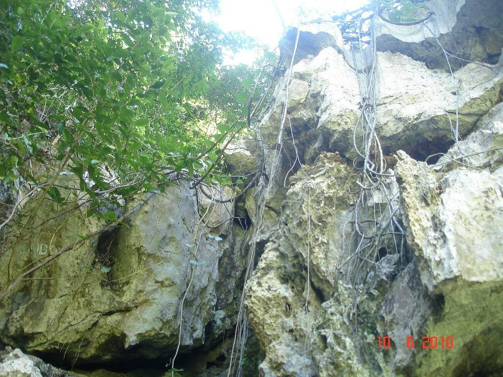
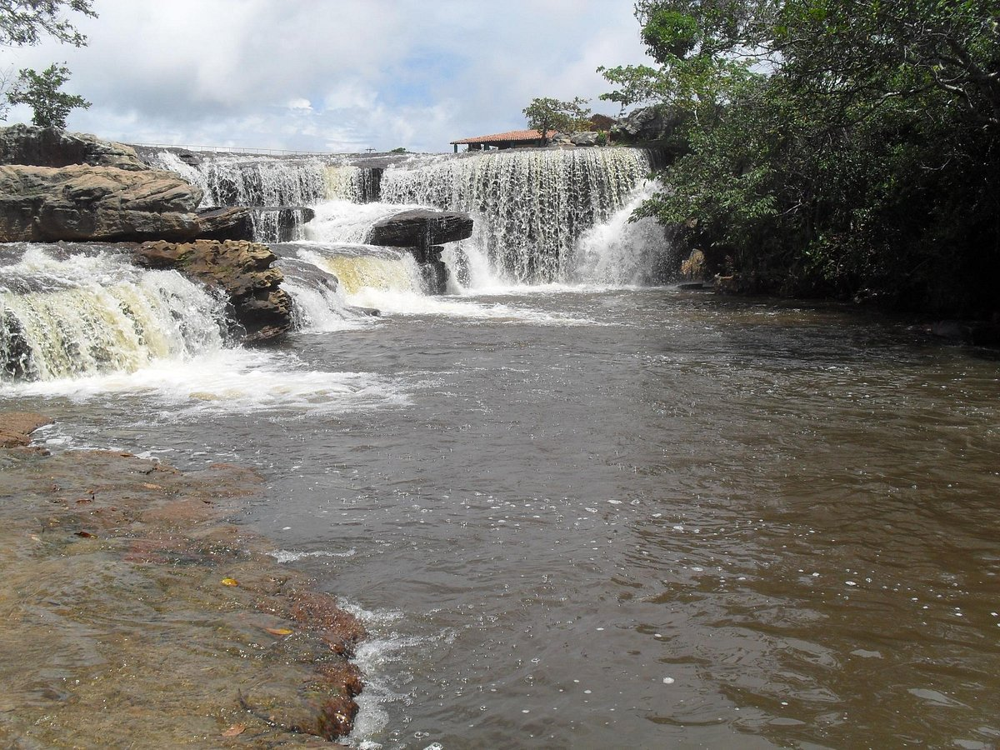

Informações técnicas sobre relevo, população, IDH etc.
| INFORMAÇÕES | |
|---|---|
| Municípios limítrofes | Ubajara, São Benedito, Mucambo, Graça e São João da Fronteira (Piauí) |
| Fundação | 1878 (143 anos) |
| População total | pop_total |
| Clima | Tropical Subúmido, Tropical de altitude e Tropical Semiárido Brando |
| IDH | 0,646 — médio |
| PIB | R$ 5 514,61 |
| INFORMAÇÕES TERRITÓRIAIS | |
|---|---|
| Número de habitantes | 24 997 habitantes |
| Superfície de Ibiapina |
41 494 hectares
414,94 km² (160,21 sq mi) |
| Densidade populacional | 60,2 ha./km² |
| Altitude de Ibiapina | 887 metros de altitude |
| Coordenadas geográficas decimais |
Latitude:
-3.92515
Longitude: -40.8953 |
| Coordenadas geográficas sexagesimais | Latitude: 3° 55' 31'' Sul , Longitude: 40° 53' 43'' Oeste |
| INFORMAÇÕES DO MUNICÍPIO | |
|---|---|
| Endereço da Prefeitura Municipal de Ibiapina |
Ibiapina
Prefeitura de Ibiapina
Rua Moisés Aarão, s/n IBIAPINA - CE, 62360-000 Brasil Work +55 88 3653-1125 Fax +55 88 3653-1166 |
| Telefone da prefeitura | |
| Fax | |
| Endereço electrónicoda prefeitura |
A carregar...
|
| Site oficial do município | ibiapina.ce.gov.br |
| INFORMAÇÕES DO ADMINISTRATIVAS | ||
|---|---|---|
| Prefeito de Ibiapina | MARCOS ANTONIO DA SILVA LIMA | |
| Partido politico | PSB | |
| INFORMAÇÕES DE TRANSPORTE | |
|---|---|
| Aeroporto |
Aeroporto de Sobral
67.6 km
Aeroporto Pinto Martins
112.8 km
Aeroporto Internacional Prefeito Dr.João Silva Filho
147.7 km
|
| INFORMAÇÕES DE DISTÂNCIA A OUTRAS CIDADES | ||
|---|---|---|
| São Paulo : 2270 km | Rio de Janeiro : 2127 km | Brasília : 1528 km |
| Salvador : 1040 km | Fortaleza : 262 km mais perto | Belo Horizonte : 1800 km |
| Manaus : 2128 km | Curitiba : 2556 km | Recife : 809 km |
| Goiânia : 1688 km | Belém : 889 km | Porto Alegre : 3103 km |
| Guarulhos : 2250 km | Campinas : 2215 km | São Luís : 410 km |
| Distância calculada em linha reta! | ||
Conheça mais sobre a história da Ibiapina.
O território que compõe o município de Ibiapina foi primitivamente notável reduto e aldeia do Chefe Diabo Grande, chefe da poderosa nação Tabajara, cujos domínios se estendiam no cimo da Serra Grande. Pertencia à Capitania do Piauí, passando, em 1741, à jurisdição do Ceará.
Fatos de suma importância se desenrolaram no território de Ibiapina; Pero Coelho de Souza, português de nobre família, filho dos Açores, em 1603 veio para as terras do Ceará Grande e, não resistindo à tentação de subir à Serra da Ibiapaba, conhecida como a terra da Promissão, veio ter à Ibiapina, passando pela Aldeia de Irapuan (provavelmente Viçosa). Toda a Serra de Ibiapaba era dominada por dois poderosos e temíveis chefes indígenas: Diabo Grande e Mel Redondo. Vários combates foram travados e, nos primeiros se sobressaía a figura de Martins Soares Moreno. Pero Coelho, tendo em vista a conquista do alto da serra combateu ferrenhamente contra Diabo Grande, cuja aldeia estava localizada no local onde hoje se ergue a cidade de Ibiapina. Pero Coelho foi quem primeiro dominou a Ibiapaba. Após Pero Coelho, outra missão se segue. Partindo de Pernambuco os padres Luiz Figueira e Francisco Pinto foram para a Serra da Ibiapaba onde tiveram o primeiro contato com Irapuan de onde seguiram para a Aldeia de Diabo Grande, tendo-lhes servido de guia Diabo Ligeiro. Os dois missionários conseguiram dominar os silvícolas, erguer capela, fundar escola e pacificar os mais exaltados. A Missão Jesuítica foi o ponto de partida para a fundação da futura vila de Ibiapina, que apesar das lutas constantes, extinguindo-se e renascendo, consolidou-se o domínio e a pacificação dos nativos, resultando na definitiva edificação do arruado de 1820. Em 1833 a povoação de São Pedro de Ibiapina foi transformada em distrito de Paz. Gentílico: ibiapinense
Fonte: https://cidades.ibge.gov.br/brasil/ce/ibiapina/historico
Saiba mais sobre os melhores lugares e o que fazer em Ibiapina.
Parque Nacional de Ubajara - Ceará
Fotos de Gruta de Ubajara
Fotos de Cachoeira do Boi Morto
Veja como chegar nos melhores pontos de Ibiapina.